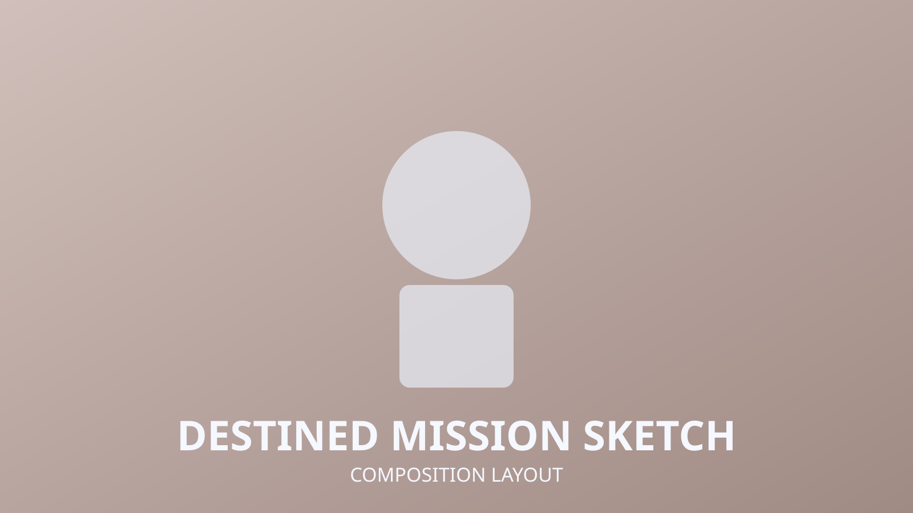
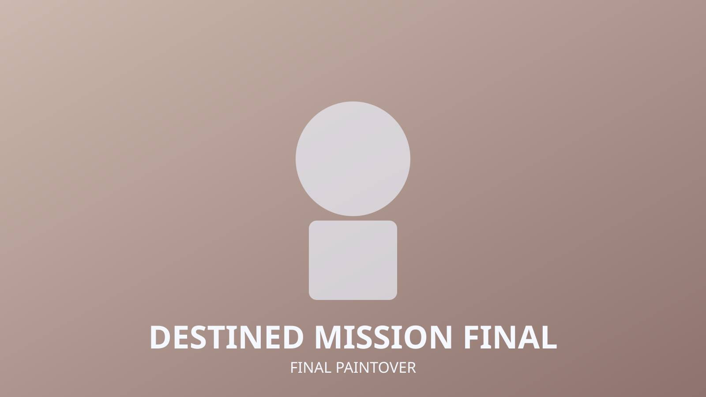

The Destined Mission
2D Concept
Key Art
Story Moment
The Destined Mission presents a high-stakes narrative frame with directional lighting and environmental depth cues to emphasize forward movement and mission urgency.

Composition Layout
The layout pass explored horizon placement and leading lines to guide attention from foreground action toward the destination landmark.
Final Paintover
Final rendering tightened light temperature shifts and atmospheric layers, giving the scene stronger cinematic structure and readable motion.

